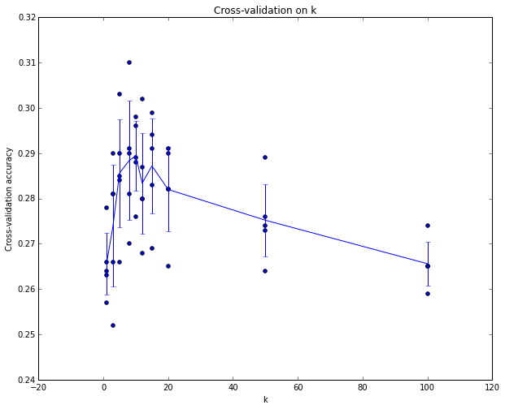

Basis
Click on a tile to change the color scheme:
1. General Guidelines

1.1 Issues of model complexity and optimization
How to realize the optimization issue?

1.2 Tackle overfitting
-
Less parameters, sharing parameters
-
Less features
-
Early stopping
-
Regularization
-
Dropout
-
Validation set
The correct way to set hyperparameters is to split your training data into two: a training set and a fake test set, which we call validation set.
### Cross-validation
If the lack of training data is a concern

e.g. 5 folds Cross-validation: 每次用一个作为validation set，轮换5次，取平均

1.3 Validation set
The correct way to set hyperparameters is to split your training data into two: a training set and a fake test set, which we call validation set.
1.3.1 Cross-validation
If the lack of training data is a concern

e.g. 5 folds Cross-validation: 每次用一个作为validation set，轮换5次，取平均

2. Data Preprocessing
Note:
It is very important to zero-center the data, and it is common to see normalization of every pixel as well.
Common pitfall. An important point to make about the preprocessing is that any preprocessing statistics (e.g. the data mean) must only be computed on the training data, and then applied to the validation / test data. E.g. computing the mean and subtracting it from every image across the entire dataset and then splitting the data into train/val/test splits would be a mistake. Instead, the mean must be computed only over the training data and then subtracted equally from all splits (train/val/test).
2.1 Mean subtraction
X -= np.mean(X, axis = 0)
2.2 Normalization
After zero-centered, we can: X /= np.std(X, axis = 0)
2.3 PCA and Whitening
2.4 Data Augmentation
Clipping, rotating, ...
3. Weight Initialization
Pitfall: all zero initialization.
This turns out to be a mistake, because if every neuron in the network computes the same output, then they will also all compute the same gradients during backpropagation and undergo the exact same parameter updates. In other words, there is no source of asymmetry between neurons if their weights are initialized to be the same.
3.1 Small random numbers
W = 0.01* np.random.randn(D,H)
, where randn samples from a zero mean, unit standard deviation gaussian.
Warning: small is not always good!
For example, a Neural Network layer that has very small weights will during backpropagation compute very small gradients on its data (since this gradient is proportional to the value of the weights). This could greatly diminish the “gradient signal” flowing backward through a network, and could become a concern for deep networks.
3.2 Xavier Initialization - Calibrating the variances
Common: w = np.random.randn(n) / sqrt(n), where n is the number of its inputs.
w = np.random.randn(n) * sqrt(2.0/n) is the current recommendation for use in practice in the specific case of neural networks with ReLU neurons.

3.2.1 For ReLU

4. Loss function
4.1 Multiclass SVM Loss (Hinge Loss)

"1" can be replaced by other values.
The essence of SVM loss is that the score of the correct label needs to be greater than other scores by 1.
4.2 Softmax and Cross-entropy

4.3 Regularization
5. Optimization
5.1 SGD

5.2 Local minima and Saddle point

A naive way to escape saddle point. Seldom used!


5.3 Minibatch
epoch: see all the batches once
shuffle for every epoch

5.4 Momentum

5.5 Learning rate
Learning rate cannot be one-size-fits-all!
5.5.1 Adam Optimizer: RMSProp + Momentum

5.5.2 Learning rate scheduling
5.5.2.1 Learning rate decay

5.5.2.2 Warm up

6. Activation
6.1 ReLU

So we want input data with mean 0!
6.2 Sigmoid

6.3 Leaky ReLU

6.4 PReLU
\(\alpha\) is not hard-coded! It can be learned!
6.5 ELU

6.6 SELU

6.7 Maxout

6.8 Swish

7. Batch Normalization

7.1 Batch Understanding:
Input data \(\mathbf{x}\)s are not independent! \(\mathbf{x}\)s in a (mini-)batch are related to each other. So we need to treat the whole (mini-)batch as a large network!
7.2 Recovery
Sometimes we use a linear equation to recover:
(Initialize \(\gamma\) with \(\mathbf{1}\) and \(\beta\) with \(\mathbf0\); after training for some time, the loss function gets to some good error surface, then we can cancel the constraint of normalization.)

7.3 Pros and Corns:

7.4 Test-Time


8. Transfer Learning